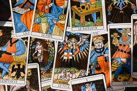
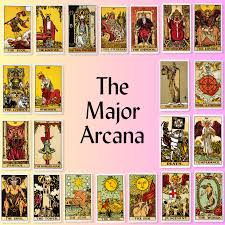
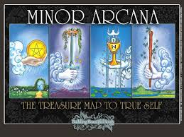

Tarot

What is it
Tarot is a form of divination that uses a deck of specially illustrated cards to gain insight into the past, present, or future.
Learn more

Major Arcana
Major Arcana (22 cards):
Represents significant life events, spiritual lessons, and archetypes.

Minor Arcana
Minor Arcana (56 cards):
Focuses on everyday life and practical matters.